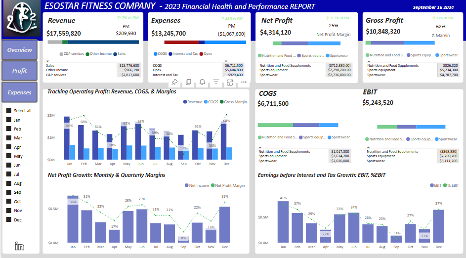
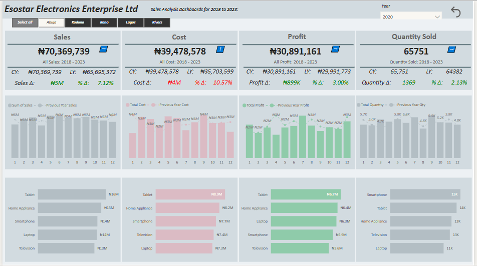
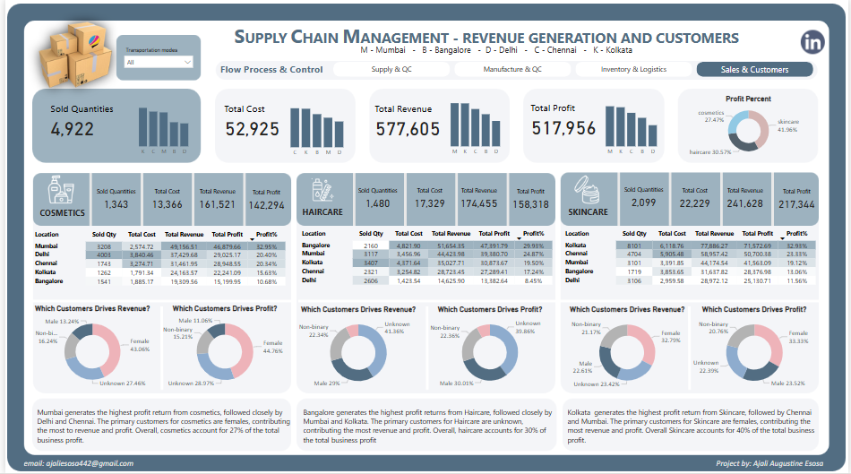
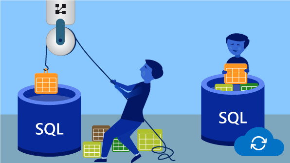
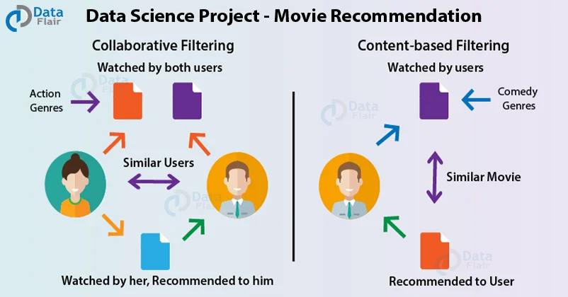

Optimizing Battery Energy Storage System (BESS) Operations through Data Analysis
This project focuses on analyzing and optimizing the performance of a Battery Energy Storage System (BESS) using an extensive dataset. The analysis explores key parameters such as State of Charge (SOC), Power Output/Input, Frequency Regulation Signal, Operational Modes, and Market Prices to derive actionable insights. By leveraging advanced data analytics techniques, the project provides a comprehensive understanding of BESS operations, highlighting opportunities for efficiency improvements, cost optimization, and enhanced system reliability in energy management. This work showcases expertise in energy analytics and problem-solving in the renewable energy sector.
Enhancing Bellabeat's Growth Strategy with Fitness Data Analysis
This project leverages Python to analyze fitness data from smart devices, aiming to uncover insights that can drive growth for Bellabeat, a health-tech company specializing in wellness products for women. By focusing on user behavior with non-Bellabeat smart devices, the analysis identifies key trends in activity, sleep, stress, and mindfulness. These insights are designed to inform Bellabeat's marketing strategy, enabling the company to refine its app and wellness product offerings. This project highlights a data-driven approach to enhancing customer engagement and market competitiveness in the wearable technology industry.

Cyclistic Bike-Share Data Analysis: Insights into Member vs. Casual Rider Usage
This project examines Cyclistic's historical bike trip data to identify key differences in how annual members and casual riders use the bike-share system. Cyclistic, a Chicago-based bike-share program, aims to increase its annual memberships as a strategy for future growth. Through the analysis of 2022 trip data containing over 5.6 million rows, this project provides insights into user behavior, offering data-driven answers to the question: How do annual members and casual riders differ in their usage patterns? The findings are designed to inform Cyclistic’s marketing strategies, enabling targeted campaigns to convert casual riders into annual members. By understanding user trends, this project demonstrates how data analytics can drive actionable insights to achieve business objectives.

Financial Health and Performance Analysis for Esostar Fitness Company
This project analyzes the 2023 financial performance of Esostar Fitness Company across three key business lines: Sportswear, Sports Equipment, and Nutrition and Food Supplements. Using interactive dashboards, the analysis highlights revenue, expenses, profitability, and cash flow distribution. Key findings reveal strong operational performance in Sportswear and Equipment, while Nutrition requires strategic improvements to address cash flow challenges. Recommendations focus on optimizing expenses, enhancing profitability, and driving growth.

Electronics Sales Analysis Dashboard(2018–2023)
This Power BI project analyzes electronics sales performance across five key Nigerian states from 2018 to 2023. The interactive dashboard provides insights into sales, costs, profits, and product performance, including year-over-year trends, profit margins, and quantity sold. Visualizations highlight key metrics, such as the top-performing states and products, helping businesses identify growth opportunities and optimize decision-making.

Comprehensive Supply Chain Performance Dashboard
This project showcases a dynamic Power BI dashboard designed for supply chain management, focusing on potential issue identification, product performance analysis, and logistics optimization. It integrates key metrics like stock levels, supplier lead times, revenue, and shipping durations to provide actionable insights. With interactive visuals and filters, the dashboard empowers decision-making, ensuring efficiency and profitability across the supply chain.

Energy Storage System Revenue and Efficiency Analysis Using MySQL
This project analyzes energy storage system performance using MySQL. It features revenue breakdowns, efficiency identification, and market price trends during peak shaving operations. Additionally, it calculates revenue losses during a two-week rest period. By leveraging SQL queries for aggregations, filtering, and trend analysis, this project demonstrates advanced data analysis techniques to extract actionable insights from energy market and operational datasets.

Customer Churn Prediction: Binary Classification Using Machine Learning
In this project, I built a binary classification model to predict customer churn using the 2024 Kaggle Bank Churn dataset. The objective is to identify whether a customer will continue or close their account. The analysis leverages machine learning algorithms to uncover patterns in customer behavior, enabling proactive decision-making to improve retention strategies. Key steps include data preprocessing, feature engineering, model training, and performance evaluation.

Building Advanced Recommendation Systems Using Yelp Review Data
This project leverages a subset of Yelp's extensive dataset to develop four types of recommendation systems: Knowledge/Rank-Based, Similarity-Based Collaborative Filtering, Matrix Factorization-Based Collaborative Filtering, and Clustering-Based Recommendations. By analyzing user reviews, business metadata, and social network data, the project delivers tailored business recommendations, enhancing decision-making for customers while showcasing diverse recommender system techniques.

Loan Eligibility Analysis: Predictive Modeling and Demographic Insights
This project explores a loan eligibility dataset to address key analytical questions regarding loan approvals. Using machine learning and statistical techniques, the project predicts loan eligibility, identifies critical factors influencing approval, and examines the impact of demographics, credit history, and property areas on loan outcomes. The findings offer actionable insights to improve decision-making in the loan approval process and mitigate financial risks for lenders.
Customer Segmentation Using Credit Card Data for Personalized Campaigns
This project focuses on unsupervised learning techniques to segment AllLife Bank's credit card customers based on their spending patterns and past interactions with the bank. By identifying distinct customer segments, the marketing team can design personalized campaigns to drive customer acquisition and upselling, while the operations team can enhance service delivery to address poor customer support perceptions.
Predicting Insurance Premiums with Advanced Machine Learning Models
This project explores how data science and predictive modeling can enhance the accuracy of insurance premium predictions. By training and testing various machine learning models, we aim to determine the most efficient model for predicting an individual's insurance premium. Moving beyond traditional actuarial methods, this approach leverages personalized risk profiling, ensuring fairer and more precise premium calculations while transforming the insurance industry with data-driven insights.